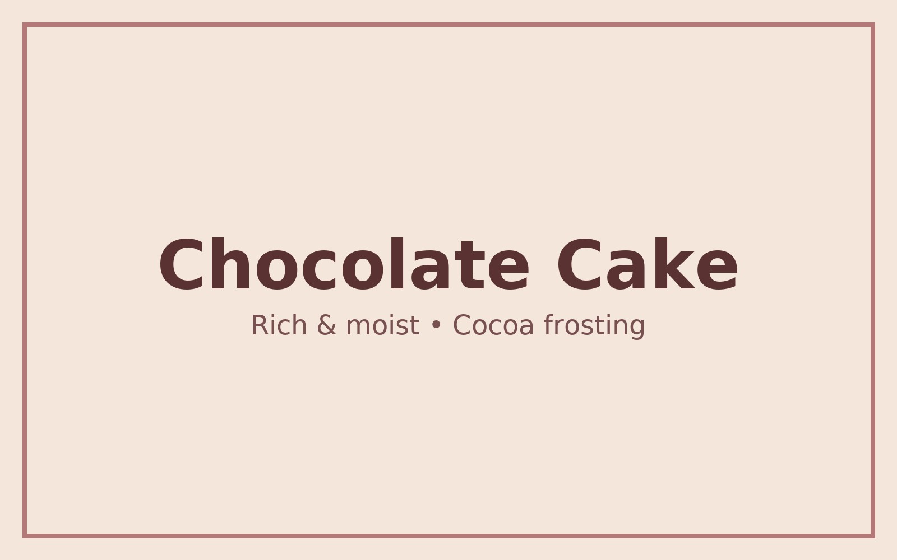

Rich & moist — perfect for celebrations!
Ingredients
- 1 ¾ cups (220g) all-purpose flour
- 1 ½ cups (300g) granulated sugar
- ¾ cup (75g) unsweetened cocoa powder
- 1 ½ tsp baking powder
- 1 ½ tsp baking soda
- 1 tsp salt
- 2 large eggs, room temperature
- 1 cup (240ml) milk
- ½ cup (120ml) vegetable oil
- 2 tsp vanilla extract
- 1 cup (240ml) boiling water
Steps
- Preheat oven to 175°C (350°F). Grease and line two 9-inch pans.
- Whisk dry ingredients: flour, sugar, cocoa, baking powder, baking soda, and salt.
- Beat in eggs, milk, oil, and vanilla until smooth.
- Carefully mix in boiling water (batter will be thin).
- Divide batter evenly into pans.
- Bake for 30–35 minutes, until a skewer comes out clean.
- Cool in pans 10 minutes, then transfer to a rack.
- Frost and decorate as you like.